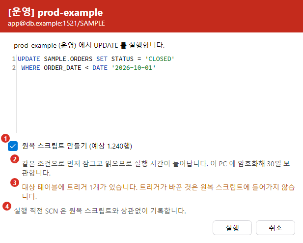
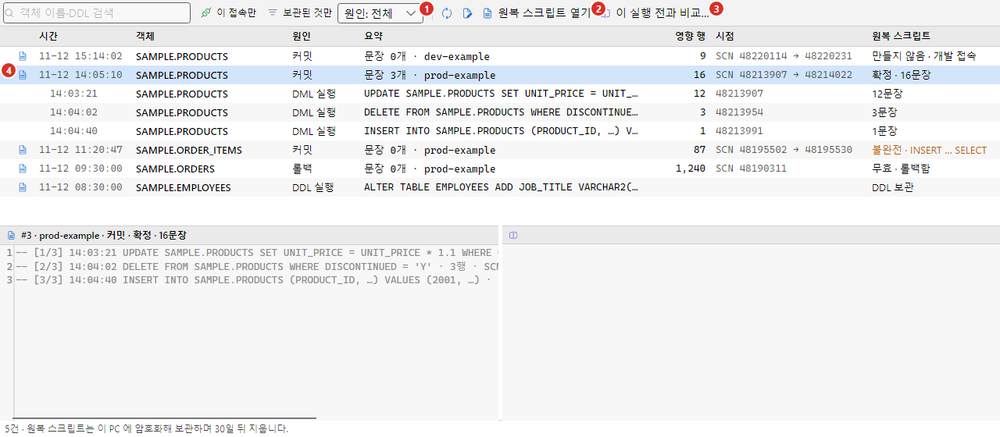
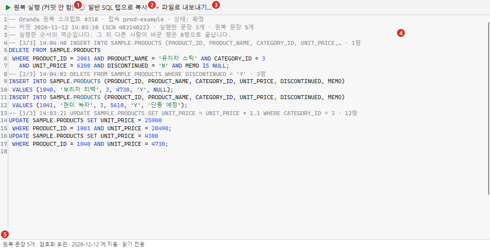
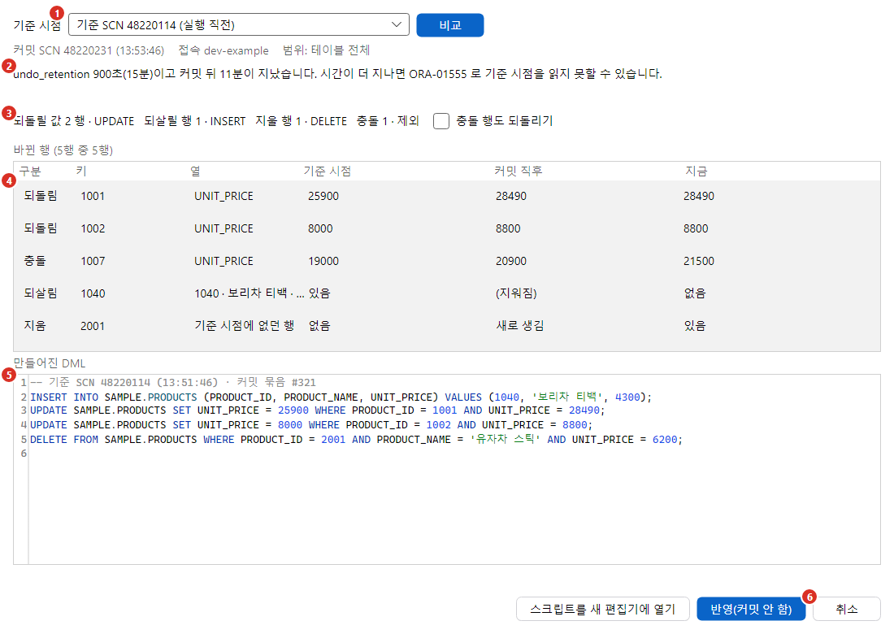

잘못 실행하고 커밋까지 한 데이터를 Oranda 안에서 되돌리는 방법입니다.
| 접속 환경 | 원복 스크립트 | 실행 직전 시점 | 되돌리는 방법 |
|---|---|---|---|
| 운영 | 만듦 (확인 창에서 끌 수 있음) | 기록 | A 원복 스크립트, 없으면 B |
| 테스트 · 개발 | 안 만듦 | 기록 | B 이 실행 전과 비교 |
| 그리드 반영 전 | 편집 도구 줄 행 되돌리기 · 모두 되돌리기. DB 에는 안 보냄. |
| 실행 후 커밋 전 | SQL > 롤백 또는 도구 모음 롤백. |
자동 커밋·DDL 실행은 이미 커밋된 것입니다. 아래 방법을 쓰세요.
운영 접속에서 커밋한 실수에 먼저 씁니다. undo 와 무관하게 30일 동안 됩니다.



원복 스크립트가 없을 때(개발·테스트, 상한 초과, MERGE 등, 불완전) 씁니다. 실행 직전 값을 undo 에서 읽어 되돌리는 DML 을 만듭니다.

| 구분 | 뜻 | 만드는 문장 |
|---|---|---|
| 되돌림 | 바뀐 뒤 그대로인 행 | UPDATE |
| 되살림 | 지운 행 | INSERT |
| 지움 | 넣은 행 | DELETE |
| 충돌 | 커밋 뒤 남이 다시 바꾼 행 | 기본 제외 (충돌 행도 되돌리기로 포함) |
| 같음 | 앞뒤 값이 같음 | 없음 |
yyyy-MM-dd HH:mm:ss. 그 사이 남의 변경까지 잡힘.결과 그리드 오른쪽 클릭 > 플래시백. 결과에 기본 키 열이 있어야 합니다.
| 메뉴 | 하는 일 |
|---|---|
| N분 전 값 보기… | N분 전 값을 새 탭에, 다른 칸 노랗게. 보기만 함. |
| 이 행 변경 이력 | 그 행의 버전 목록. 최신이 위, 바뀐 칸 보라색. |
| 이전 값으로 되돌리기… | 고른 행(최대 200)을 고른 시점 값으로. |
| 이 행 상태로 되돌리기… | 이력의 한 버전으로. 지운 행이면 INSERT. |
F9, macOS Ctrl+Enter).지운 행까지: 기준 시점에서 커밋 묶음 → 이 커밋 묶음 전체 보기.
SELECT versions_operation, e.* FROM emp VERSIONS BETWEEN SCN MINVALUE AND MAXVALUE e WHERE e.empno = 7369; SELECT * FROM emp AS OF TIMESTAMP SYSTIMESTAMP - INTERVAL '1' HOUR;
Tibero 는 VERSIONS BETWEEN 미지원(TBR-8022). AS OF 결과에서 쓰세요. LOB 등 큰 열은 되돌리지 않습니다.
되돌리기도 변경 일지에 새 묶음으로 남습니다. 그 묶음을 A 나 B 로 다시 되돌리면 됩니다.
| 원복 실행 | 문장마다 기록, 원인 「원복 실행(#N)」, 실행 직전 SCN 포함 |
| 비교 반영 · 플래시백 | 「비교 반영」 묶음 (요약에서 값 가림) |
정의만 돌아옵니다. DROP COLUMN 으로 잃은 값은 안 돌아옵니다.
DROP … PURGE 로 지운 테이블은 휴지통에 없습니다.
TRUNCATE, DROP COLUMN, DROP … PURGE 는 실행 뒤 되돌릴 수 없습니다.
ORB_테이블_월일시분, 내 스키마에 생성.| 표시 | 뜻 | 할 일 |
|---|---|---|
| 확정 | 모든 원복 문장 생성 | A |
| 불완전 | 일부 못 만듦 | A 후 B 로 남은 차이 확인 |
| 만들지 않음 | 개발·테스트, 끔, 상한, 대상 아님 등 | B |
| 확인 필요 | 트랜잭션 결과 모름 | 데이터 확인 후 A |
| 무효 | 롤백한 묶음 | 없음 |
| 열림 | 커밋 전 | 롤백 |
| 증상 | 해결 |
|---|---|
| 원복 실행이 모두 0행 | 남이 바꿈. B 로 지금 값과 비교. |
| 충돌: 같은 키 있음 | 그 행 확인 후 직접 처리. |
| 원복 스크립트를 열 수 없음 | 다른 PC 이거나 키 손상. B 사용. |
| 만들지 않음 · 권한 없음 | SELECT·FOR UPDATE 권한 없음. B 사용. |
| ORA-01555 · undo 에서 잃음 | 시간 초과. 원복 스크립트 있으면 A, 없으면 DBA. |
| ORA-01466 · 정의가 바뀜 | 그 사이 DDL. 원복 스크립트 있으면 A. |
| ORA-01031 · ORA-41900 | FLASHBACK 권한 요청: GRANT FLASHBACK ON 소유자.테이블 TO 사용자 |
| MERGE · INSERT … SELECT · PL/SQL 안 DML | 원복 스크립트 대상 아님. B 사용. |
트리거·CASCADE 로 바뀐 다른 테이블, LOB 값은 원복 스크립트에 빠집니다. 플래시백 오류 목록 ↗
| 항목 | 곳 | 처음 값 |
|---|---|---|
| 운영 DB 환경 「운영」 | 접속 편집 | 개발 |
| 직전 시점(SCN) 기록 | 설정 > 되돌리기 | 켜짐 |
| 운영 원복 스크립트 | 설정 > 되돌리기 | 켜짐 |
| 문장당 상한 | 설정 > 되돌리기 | 100,000행 |
| 보관 기간 | 설정 > 되돌리기 | 30일 |
| 백업 테이블 권하기 | 설정 > 되돌리기 | 켜짐 |
| 변경 추적(이력) | 설정 > 결과 그리드 | 켜짐, 1.5일 |
| 자동 커밋 | SQL 메뉴 | 꺼짐 |
다른 스키마 테이블은 FLASHBACK 권한을 미리 받아 두세요. 설정 > 되돌리기 ↗